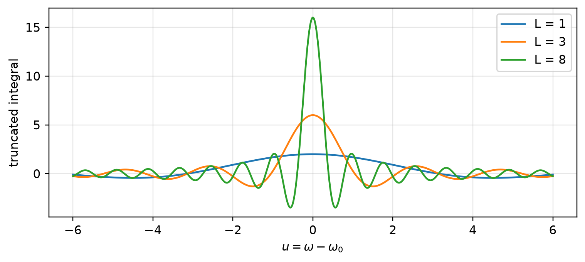
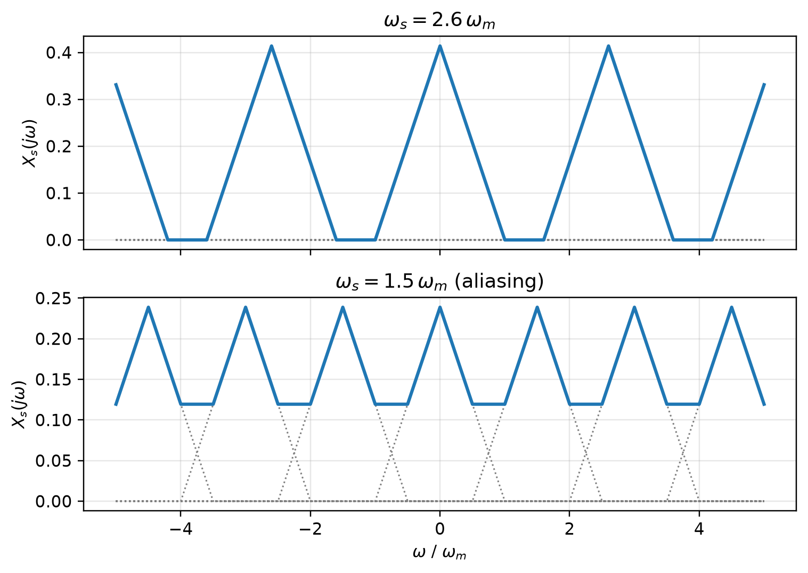
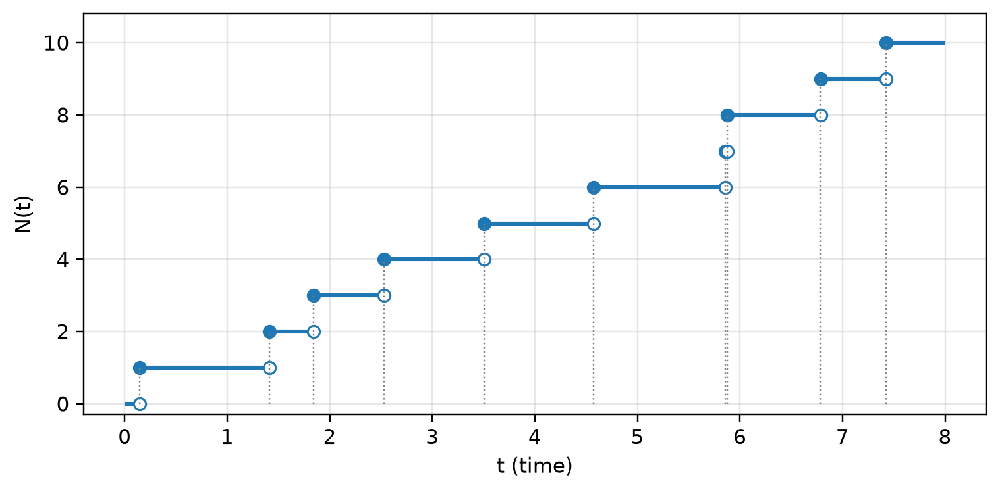
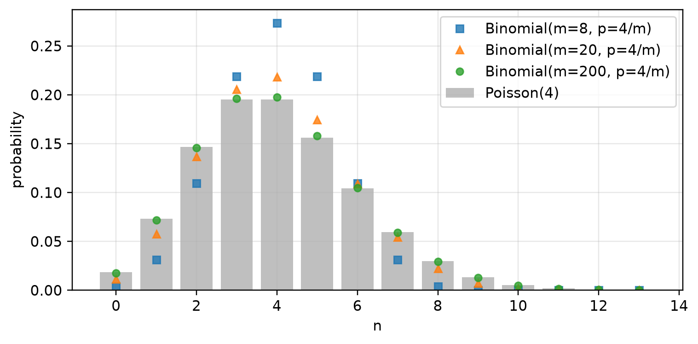
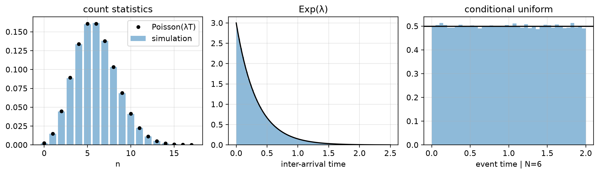

확률과정 (Stochastic Processes) - II
Random Signal Theory — 임펄스 열 샘플링과 스펙트럼 복제, 랜덤 시퀀스, 포아송 과정(강도, 카운트 통계, 도착 시각)
1 전체 흐름
이 문서는 두 갈래로 구성된다.
- 샘플링: 연속시간 신호를 임펄스 열로 곱하면 주파수 영역에서 스펙트럼이 \(\omega_s\) 간격으로 복제된다. 이를 랜덤 과정에 적용하면, 대역제한된 정상 과정은 이산시간 랜덤 시퀀스로 손실 없이 표현된다.
- 포아송 과정: “언제 일어날지 모르는 사건”을 모델링하는 점과정. 미소 구간 법칙(small-\(\Delta t\) law) 하나로부터 구간 내 사건 수가 포아송 분포를 따른다는 것을 유도한다.
두 주제는 모두 시간축 위의 점(point) 을 다룬다는 공통점이 있다. 샘플링에서는 점이 결정적 격자 \(kT_s\)에 놓이고, 포아송 과정에서는 점의 위치 자체가 랜덤이다.
2 임펄스 열 샘플링
2.1 정의
주기 \(T_s\)의 임펄스 열(impulse train)을
\[ p_{T_s}(t)=\sum_{n=-\infty}^{\infty}\delta(t-nT_s) \]
로 정의하면, 샘플링은 신호와 임펄스 열의 곱이다.
\[ x_s(t)=x(t)\,p_{T_s}(t)=\sum_{n}x(nT_s)\,\delta(t-nT_s) \]
두 번째 등호는 \(x(t)\delta(t-t_0)=x(t_0)\delta(t-t_0)\) 에서 나온다. 샘플값 \(x(nT_s)\)가 각 임펄스의 면적으로 저장된다.
2.2 푸리에 급수 복습
임펄스 열의 푸리에 변환을 구하려면 푸리에 급수가 필요하다.
직교성. 주기 \(T\), \(\omega_0=2\pi/T\) 일 때 복소지수 \(\{e^{jk\omega_0 t}\}_{k\in\mathbb Z}\) 는 한 주기 위에서 직교한다.
\[ \int_{-T/2}^{T/2} e^{jk\omega_0 t}\,\overline{e^{jl\omega_0 t}}\,dt=\int_{-T/2}^{T/2} e^{j(k-l)\omega_0 t}\,dt= \begin{cases}T & k=l\\ 0 & k\neq l\end{cases} \]
\(k\neq l\) 이면 한 주기 동안 정수 번 회전하므로 적분이 0이고, \(k=l\) 이면 피적분함수가 1이다.
계수. \(x(t)=\sum_k c_k e^{jk\omega_0 t}\) 의 양변에 \(e^{-jl\omega_0 t}\) 를 곱해 한 주기 적분하면 \(k=l\) 항만 남는다.
\[ \boxed{c_k=\frac{1}{T}\int_{-T/2}^{T/2}x(t)\,e^{-jk\omega_0 t}\,dt} \]
Note\(1/T\)의 출처
\(1/T\)는 기저의 노름 제곱 \(\int_{-T/2}^{T/2}|e^{jk\omega_0 t}|^2dt=T\) 로 나눈 것이다. 유한차원에서 직교기저 전개 계수가 \(c_k=\langle x,e_k\rangle/\langle e_k,e_k\rangle\) 인 것과 같은 구조이다. \(c_0\)은 한 주기 평균(DC 성분)이다.
2.3 복소지수의 푸리에 변환: \(\mathcal F\{e^{j\omega_0 t}\}=2\pi\delta(\omega-\omega_0)\)
변환 쌍을 다음 규약으로 둔다.
\[ X(j\omega)=\int_{-\infty}^{\infty} x(t)e^{-j\omega t}dt,\qquad x(t)=\frac{1}{2\pi}\int_{-\infty}^{\infty} X(j\omega)e^{j\omega t}d\omega \]
\(x(t)=e^{j\omega_0 t}\) 에 대해 정의식 \(\int e^{j(\omega_0-\omega)t}dt\) 는 피적분함수의 절댓값이 1이라 고전적 의미로 수렴하지 않는다. 그래서 후보를 놓고 역변환으로 확인한다. \(X(j\omega)=A\,\delta(\omega-\omega_0)\) 라 두면
\[ \frac{1}{2\pi}\int A\,\delta(\omega-\omega_0)e^{j\omega t}d\omega=\frac{A}{2\pi}e^{j\omega_0 t} \;\Longrightarrow\; A=2\pi . \]
\[ \boxed{\mathcal F\{e^{j\omega_0 t}\}=2\pi\,\delta(\omega-\omega_0)} \]
해석. 한 주파수로 영원히 회전하는 신호의 스펙트럼은 그 주파수 한 점에만 존재한다. 계수 \(2\pi\)는 역변환의 \(1/2\pi\) 규약을 보상하는 값이다. 특히 \(\omega_0=0\) 이면 \(\mathcal F\{1\}=2\pi\delta(\omega)\) 이다.
분포(distribution)로서의 의미. 적분을 \([-L,L]\)에서 자르면
\[ \int_{-L}^{L}e^{j(\omega_0-\omega)t}dt=\frac{2\sin\big((\omega-\omega_0)L\big)}{\omega-\omega_0}. \]
이 함수는 \(L\to\infty\) 에서 높이 \(2L\), 폭 \(\sim 1/L\) 로 뾰족해지고 면적은 \(\int\frac{2\sin(uL)}{u}du=2\pi\) 로 고정된다. 따라서 시험함수에 대해 적분했을 때의 극한이 \(2\pi\delta(\omega-\omega_0)\) 이며, 등식은 이 의미로 이해해야 한다.
2.4 임펄스 열의 푸리에 변환
① 푸리에 급수. \(p_{T_s}(t)\)는 주기 \(T_s\)이고, 한 주기 \([-T_s/2,T_s/2)\) 안에는 \(t=0\)의 임펄스 하나만 있다. sifting 성질에 의해
\[ c_k=\frac{1}{T_s}\int_{-T_s/2}^{T_s/2}\delta(t)e^{-jk\omega_s t}dt=\frac{1}{T_s}\quad(\forall k), \qquad p_{T_s}(t)=\frac{1}{T_s}\sum_{k\in\mathbb Z}e^{jk\omega_s t},\quad \omega_s=\frac{2\pi}{T_s}. \]
모든 조화 성분이 크기와 위상이 같아, \(t=nT_s\) 에서만 동시에 보강간섭하여 임펄스를 만든다.
② 항별 변환. 선형성과 위의 결과를 쓰면
\[ \boxed{P(j\omega)=\mathcal F\{p_{T_s}(t)\}=\frac{1}{T_s}\sum_k 2\pi\,\delta(\omega-k\omega_s)=\frac{2\pi}{T_s}\sum_{k\in\mathbb Z}\delta(\omega-k\omega_s)} \]
일반적으로 주기 신호의 급수 계수가 \(c_k\)이면 \(X(j\omega)=\sum_k 2\pi c_k\,\delta(\omega-k\omega_0)\) 이다. 즉 임펄스의 위치는 \(k\omega_0\), 면적은 \(2\pi c_k\) 이다.
2.4.1 계수 \(2\pi/T_s\) 해부
\(\omega_s=2\pi/T_s\) 가 이미 식에 들어 있으니 앞의 계수가 중복처럼 보일 수 있지만, 둘은 역할이 다르다.
| 요소 | 역할 | 출처 |
|---|---|---|
| \(\delta(\omega-k\omega_s)\) 의 \(\omega_s\) | 임펄스의 위치 | 주기 \(T_s\) → 기본 주파수 |
| 앞의 \(1/T_s\) | 임펄스 면적의 일부 | 푸리에 급수 계수 \(c_k\) |
| 앞의 \(2\pi\) | 임펄스 면적의 일부 | \(\omega\) 영역 변환 규약 (\(e^{j\omega_0t}\leftrightarrow2\pi\delta\)) |
면적이 수치상 \(\omega_s\)와 같으므로 \(P(j\omega)=\omega_s\sum_k\delta(\omega-k\omega_s)\) 로 써도 동치이다. 이때 앞의 \(\omega_s\)는 위치가 아니라 면적을 나타낸다.
계수가 없다고 가정하면 모순이 생긴다. \(P(j\omega)=\sum_k\delta(\omega-k\omega_s)\) 라 두고 역변환하면, Poisson 합 공식 \(\sum_k e^{jk\omega_s t}=T_s\sum_n\delta(t-nT_s)\) 에 의해
\[ \frac{1}{2\pi}\sum_k e^{jk\omega_s t}=\frac{T_s}{2\pi}\,p_{T_s}(t)\neq p_{T_s}(t). \]
2.4.2 검산
- 차원: \(p_{T_s}(t)\)의 단위는 \(1/\mathrm{s}\) 이고 \(\int dt\) 를 거치면 변환은 무차원이다. 우변 \(\frac{2\pi}{T_s}[1/\mathrm s]\times\delta(\omega)[\mathrm s]\) 도 무차원이다.
- \(f\) 표기: \(x(t)=\int X(f)e^{j2\pi ft}df\) 규약에서는 \(e^{j2\pi f_0t}\leftrightarrow\delta(f-f_0)\) 이므로 \(P(f)=\frac{1}{T_s}\sum_k\delta(f-k/T_s)\). \(\delta(f)=\delta(\omega/2\pi)=2\pi\delta(\omega)\) 로 바꾸면 \(\omega\) 영역 결과와 일치한다. 즉 \(2\pi\)는 표기 규약의 산물이고, \(1/T_s\)가 본질적인 스케일이다.
2.5 샘플링된 신호의 스펙트럼
시간 영역의 곱은 주파수 영역의 컨볼루션이다 (\(\omega\) 규약에서 \(\frac{1}{2\pi}\)가 붙는다).
\[ X_s(j\omega)=\frac{1}{2\pi}X(j\omega)*P(j\omega) =\frac{1}{2\pi}\cdot\frac{2\pi}{T_s}\sum_k X(j\omega)*\delta(\omega-k\omega_s) =\boxed{\frac{1}{T_s}\sum_{k\in\mathbb Z}X\big(j(\omega-k\omega_s)\big)} \]
\(2\pi/T_s\)의 \(2\pi\)는 컨볼루션의 \(1/2\pi\)와 상쇄되고, 남은 \(1/T_s\)가 각 복제본의 이득이 된다. 원 스펙트럼이 \(\omega_s\) 간격으로 복제된다.
2.6 앨리어싱과 완전 복원
\(X(j\omega)=0\) for \(|\omega|>\omega_m\) 이라 하자.
- \(\omega_s>2\omega_m\) : 복제본 \([k\omega_s-\omega_m,\,k\omega_s+\omega_m]\) 들이 겹치지 않는다. 이상적 저역통과필터(LPF)로 기저대역 복제본만 골라내면 \(x(t)\)가 복원된다.
- \(\omega_s<2\omega_m\) : 인접 복제본이 겹친다(앨리어싱). 겹친 부분에서 원래 성분과 복제 성분이 더해져 버리므로 어떤 필터로도 분리할 수 없다.
Tip복원 필터의 세부 조건
복제본의 이득이 \(1/T_s\) 이므로, 원 신호를 정확히 되찾으려면 LPF의 통과대역 이득이 \(T_s\) 여야 한다.
\[ H(j\omega)=\begin{cases}T_s & |\omega|\le\omega_c\\ 0 & |\omega|>\omega_c\end{cases},\qquad \omega_m\le\omega_c\le\omega_s-\omega_m . \]
차단주파수는 \(\omega_c=\omega_m\) 뿐 아니라 두 복제본 사이의 빈 대역 어디에 두어도 된다. \(\omega_c=\omega_s/2\) 로 두면 \(h(t)=\mathrm{sinc}(t/T_s)\) (정규화 sinc) 이고 \(x(t)=\sum_n x(nT_s)\,\mathrm{sinc}\big((t-nT_s)/T_s\big)\) 의 보간식을 얻는다.

3 랜덤 과정의 샘플링과 랜덤 시퀀스
3.1 랜덤 시퀀스
랜덤 시퀀스(random sequence)는 시간 인덱스가 정수인 랜덤 과정, 즉 이산시간 랜덤 과정이다.
\[ \{X(l)\}_{l\in\mathbb Z}\quad(\text{인덱스는 정수, 값은 실수 가능}) \]
연속시간 과정 \(X(t)\)를 간격 \(T\)로 샘플링하면 랜덤 시퀀스가 된다.
\[ \tilde X(l)\equiv X(lT). \]
3.2 랜덤 과정에 대한 표본화 정리
결정적 신호에서는 푸리에 변환 \(X(j\omega)\) 가 대역제한인지를 봤다. 랜덤 과정의 표본 경로는 보통 에너지가 무한하여 푸리에 변환이 존재하지 않으므로, 전력스펙트럼밀도(PSD) 를 기준으로 삼는다.
Important정리
WSS 과정 \(X(t)\)가 \(S_X(f)=0\) for \(|f|>W\) 를 만족하고 샘플 간격이 \(T<\dfrac{1}{2W}\) 이면, 이산시간 시퀀스 \(X(lT)\)가 원래 과정을 표현한다.
여기서 “표현한다”는 것은 개별 표본 경로의 점별 수렴이 아니라 평균제곱(mean-square) 의미로
\[ \lim_{L\to\infty}E\!\left[\Big|X(t)-\sum_{l=-L}^{L}X(lT)\,\mathrm{sinc}\!\Big(\frac{t-lT}{T}\Big)\Big|^2\right]=0 \]
이 성립한다는 뜻이다. 랜덤 과정에서는 확률적 수렴 개념이 필요하다는 점이 결정적 표본화 정리와의 차이이다.
3.3 샘플링된 시퀀스의 상관함수
WSS 과정 \(X(t)\)에 대해 \(R_X(\tau)=E[X(t)X(t+\tau)]\) 는 시차 \(\tau\)에만 의존한다. 샘플링된 시퀀스의 상관함수는
\[ R_{\tilde X}(k)=E\big[\tilde X(l)\tilde X(l+k)\big]=E\big[X(lT)X(lT+kT)\big]=\boxed{R_X(kT)} \]
마지막 등호에서 WSS 성질(시차 \(kT\)에만 의존, \(l\)과 무관)을 썼다. 따라서 \(\tilde X\) 역시 WSS 시퀀스이며, 그 상관함수는 연속 상관함수를 \(T\) 간격으로 샘플링한 것이다.
3.4 샘플링된 시퀀스의 PSD: 스펙트럼 복제의 확률 버전
정규화 주파수 \(\nu\) (cycles/sample)에서 시퀀스의 PSD를 이산시간 푸리에 변환으로 정의한다.
\[ S_{\tilde X}(\nu)=\sum_{k}R_{\tilde X}(k)e^{-j2\pi\nu k}. \]
\(R_X(kT)=\int S_X(f)e^{j2\pi fkT}df\) 를 대입하고 Poisson 합 공식 \(\sum_k e^{j2\pi(fT-\nu)k}=\sum_m\delta(fT-\nu-m)=\frac1T\sum_m\delta\!\big(f-\frac{\nu+m}{T}\big)\) 를 쓰면
\[ \boxed{S_{\tilde X}(\nu)=\frac{1}{T}\sum_{m\in\mathbb Z}S_X\!\left(\frac{\nu+m}{T}\right)} \]
결정적 신호의 \(X_s(j\omega)=\frac1{T_s}\sum_kX(j(\omega-k\omega_s))\) 와 완전히 같은 구조이다. \(S_X\)가 \(|f|\le W\) 에 국한되고 \(1/T>2W\) 이면 복제본이 겹치지 않아, \(S_{\tilde X}\) 로부터 \(S_X\) 를 그대로 되읽을 수 있다. 이것이 PSD 기준 표본화 정리의 주파수 영역 의미이다.
4 포아송 과정: 정의와 기본 성질
4.1 점과정과 계수과정
점과정(point process)은 시간(또는 공간)의 특정 점에서 발생하는 랜덤 사건의 수학적 모델이다. 예: 네트워크의 패킷 도착 시각, 천구 위 별의 위치.
패킷 도착을 예로 들면, 사용자가 언제 다음 요청을 보낼지 정확히 알 수 없으므로 도착 시각은 랜덤이다. 이를 두 가지 양으로 기술한다.
- 계수과정 \(N_t\): 관측 시작 \(t=0\) 부터 \(t\)까지 발생한 사건 수. \(N_0=0\).
- 사건 시각 \(W_1<W_2<\cdots\) : \(i\)번째 사건이 발생한 시각. \(t\)까지의 사건 시각을 모은 벡터를 \(\mathbf W\in\mathbb R^{N_t}\) 로 쓴다 (차원 자체가 랜덤).
구간 계수는 누적 계수의 차이로 얻는다.
\[ N_{t_1,t_2}=N_{t_2}-N_{t_1},\qquad N_t=N_{0,t}. \]
4.1.1 구간 끝점 규약
\(N_t\)를 어떻게 정의하느냐에 따라 \(N_{t_1,t_2}\)가 세는 구간의 끝점 포함 여부가 달라진다.
\[ N_t=\#\{i:W_i\le t\}\;\Rightarrow\;N_{t_2}-N_{t_1}=\#\{i:\,t_1<W_i\le t_2\} \]
\[ N_t=\#\{i:W_i< t\}\;\Rightarrow\;N_{t_2}-N_{t_1}=\#\{i:\,t_1\le W_i< t_2\} \]
| \(N_t\) 정의 | 표본 경로의 연속성 | \(N_{t_1,t_2}\)가 세는 구간 |
|---|---|---|
| \(\#\{W_i\le t\}\) (“\(t\)까지”, 표준) | 우연속 (càdlàg) | \((t_1,t_2]\) |
| \(\#\{W_i< t\}\) | 좌연속 | \([t_1,t_2)\) |
“\(t\)까지 발생한 사건 수”라는 서술과 우연속 성질에 부합하는 것은 \((t_1,t_2]\) 이다. 이 문서의 일부 식은 관례상 \([t_1,t_2)\) 로 적지만, 포아송 과정에서는 사건 시각이 연속분포를 가져 \(\Pr(W_i=t_1)=0\) 이므로 두 규약의 분포는 동일하다. 차이가 실제로 문제가 되는 것은 사건이 결정적 시각(예: 슬롯 경계)에 몰릴 수 있는 일반 점과정이나 이산시간 모형이다. 어느 규약이든 반열린 구간으로 통일해야 \((t_0,t_1]\cup(t_1,t_2]\cup\cdots=(t_0,t_n]\) 처럼 인접 구간이 겹침·누락 없이 분할된다.
4.2 표본 경로의 성질
\(N(t)\) (=\(N_t\))의 표본 경로는 계단 함수이며 다음 성질을 가진다.
- 비감소: 사건 수는 늘거나 그대로일 뿐 줄지 않는다.
- 정수값: 사건을 셈하므로 \(0,1,2,\dots\)
- 우연속: 사건이 발생하는 바로 그 순간 카운트가 새 값으로 갱신된다. \(N(W_i)=\lim_{s\downarrow W_i}N(s)\).
- 단위 점프: 각 점프 시각에서 \(N(W_i)-N(W_i^-)=1\).
- 사건 사이에서는 \(N(t)\)가 일정하다.

4.2.1 왜 단위 점프인가: 단순성(orderliness)
“사건 하나가 카운트를 정확히 1 올린다”는 것은 계수과정의 정의(사건마다 가중치 1)일 뿐이다. 점프 크기는
\[ \text{점프 크기}=\#\{\text{그 시각에 발생한 사건 수}\}\times1 \]
이므로, 같은 시각에 사건이 2개 겹치면 점프는 2가 된다. 실제로 동시 도착(batch arrival)을 허용하는 비단순(non-simple) 점과정도 존재한다. 따라서 “단위 점프”가 성립하려면 한 시각에 사건이 최대 하나라는 성질이 추가로 필요하고, 포아송 과정은 다음 조건으로 이를 보장한다.
\[ \Pr\big[N_{t,t+h}\ge 2\big]=o(h)\qquad(h\to0) \]
증명 (동시 사건의 확률 = 0). \([0,T]\)를 길이 \(h=T/n\) 인 \(n\)개 소구간으로 나눈다. union bound에 의해
\[ \Pr\Big(\bigcup_{i=1}^{n}\{\text{소구간 }i\text{ 에 사건 }\ge2\}\Big)\le n\cdot o(T/n)=T\cdot\frac{o(T/n)}{T/n}\xrightarrow{n\to\infty}0. \]
같은 시각의 두 사건은 어떤 분할에서도 같은 소구간에 들어가므로, 그런 일이 일어날 확률은 이 상한보다 작아 0이다. 즉 거의 확실하게(a.s.) 모든 사건 시각은 서로 다르다.
다른 관점. 뒤에서 보이듯 도착 간격 \(W_i-W_{i-1}\) 은 지수분포(연속분포)를 따르므로 \(\Pr(W_i=W_{i-1})=0\) 이다.
동시 도착이 실제로 중요한 모형에서는 compound Poisson process \(\sum_{i\le N(t)}Y_i\) 를 쓴다. 도착 시각은 포아송이고, 각 도착의 점프 크기 \(Y_i\) 가 임의 분포를 따른다.
4.3 강도(intensity)와 미소 구간 법칙
점과정의 확률 법칙은 강도 \(\lambda(t,N_t;\mathbf W)\) 로 규정된다. 충분히 작은 \(\Delta t\)에 대해
\[ \boxed{\Pr\big[N_{t,t+\Delta t}=1\;\big|\;N_t;\mathbf W\big]=\lambda(t,N_t;\mathbf W)\,\Delta t+o(\Delta t)} \]
| 기호 | 의미 |
|---|---|
| \(N_{t,t+\Delta t}\) | 미소 구간 \((t,t+\Delta t]\) 의 사건 수 |
| \(N_t\), \(\mathbf W\) | 지금까지의 관측(사건 개수, 사건 시각들) = 과정의 이력 |
| \(\lambda(\cdot)\) | 순간 발생률, 단위는 events/s |
| \(o(\Delta t)\) | \(\lim_{\Delta t\to0}o(\Delta t)/\Delta t=0\) 인 항 |
직관: 속도 × 시간. 속도 \(v\)로 \(\Delta t\) 동안 가면 거리 \(v\Delta t\) 이듯, 발생률 \(\lambda\)로 \(\Delta t\) 동안이면 사건 확률이 약 \(\lambda\Delta t\) (무차원) 이다. 예를 들어 \(\lambda=2\) /s, \(\Delta t=1\) ms 이면 확률은 약 \(0.002\).
\(\lambda\)는 사건 개수를 결정하지 않는다. \(\lambda=5\) /s 라고 2초 동안 반드시 10개가 일어나는 것이 아니다. \(\lambda\)는 미소 구간에서의 확률을 정하는 양이고, 실제 개수는 랜덤이다 (뒤에서 평균이 \(\lambda T\) 가 됨을 보인다).
강도의 정의로 읽기.
\[ \lambda(t,N_t;\mathbf W)=\lim_{\Delta t\to0}\frac{\Pr[N_{t,t+\Delta t}=1\mid N_t;\mathbf W]}{\Delta t} \]
확률밀도 \(f(x)dx\) 가 작은 구간의 확률을 주는 것과 같은 발상이지만, \(\lambda\)는 밀도가 아니라 발생률(rate) 이므로 1보다 클 수 있다. \(\lambda\Delta t\le1\) 이 되도록 \(\Delta t\)가 충분히 작아야 한다.
왜 등호가 아니라 \(+o(\Delta t)\) 인가. 상수 강도 \(\lambda\)의 포아송 과정에서는 정확히
\[ \Pr[N_{t,t+\Delta t}=1]=\lambda\Delta t\,e^{-\lambda\Delta t}=\lambda\Delta t-\underbrace{(\lambda\Delta t)^2+\tfrac12(\lambda\Delta t)^3-\cdots}_{o(\Delta t)} \]
이다. \(\lambda\Delta t\)는 1차 근사이고, 나머지는 \((\Delta t)^2\) 이상의 차수라 \(\Delta t\) 대비 무시된다.
4.3.1 표기: ; 와 ,
\(\lambda(t,N_t;\mathbf W)\), \(\Pr[\,\cdot\mid N_t;\mathbf W]\) 에서 ; 와 , 는 수학적으로 같은 역할(모두 인자/조건)이며, 차이는 표기상의 그룹핑뿐이다.
,: 같은 층위의 인자 나열;: 앞은 현재 상태 \((t,N_t)\), 뒤는 이력 \(\mathbf W\) 로 역할 구분
즉 \(\lambda(t,N_t;\mathbf W)=\lambda(t,N_t,\mathbf W)\), \(\Pr[\cdot\mid N_t;\mathbf W]=\Pr[\cdot\mid N_t,\mathbf W]\) 이다. 참고로 \(N_t=\dim\mathbf W\) 이므로 \(N_t\)는 \(\mathbf W\)에서 결정되는 정보이다.
다른 분야의 ; 관례 |
의미 |
|---|---|
| \(p(x;\theta)\) | \(\theta\)는 확률변수가 아닌 고정 매개변수 (빈도주의). \(p(x\mid\theta)\)는 \(\theta\)가 확률변수 (베이지안) |
| \(I(X;Y)\), \(I(X;Y\mid Z)\) | 상호정보량에서 두 변수 구분; \mid 는 조건 |
여기서 \(\mathbf W\)는 고정 매개변수가 아니라 랜덤한 이력이므로 \(p(x;\theta)\) 관례와는 결이 다르다. 점과정 문헌에서는 같은 대상을 이력 \(\mathcal H_t\)에 대한 조건부 강도 \(\lambda^*(t)=\lambda(t\mid\mathcal H_t)\) 로 쓰는 경우가 많다.
4.3.2 강도 함수에 따른 점과정의 분류
| 강도 | 과정 | 예 |
|---|---|---|
| \(\lambda(t,N_t;\mathbf W)\equiv\lambda_0\) | 정상(동차) 포아송 | 평균 트래픽이 일정한 패킷 도착 |
| \(\lambda(t)\) | 비정상(비동차) 포아송 | 시간대별 트래픽 변화 (낮↑, 밤↓) |
| \(\lambda\) 가 \(\mathbf W\) 에 의존 | 자기흥분 과정(Hawkes 등) | 지진 여진, 버스트 트래픽 |
미소 구간 법칙은 포아송 과정만이 아니라 점과정 전반을 강도로 규정하는 틀이며, 강도가 이력에 의존하지 않는 경우가 포아송 과정이다.
4.4 정상 포아송 과정과 비정상 포아송 과정
포아송 과정은 무기억(memoryless)이다: 강도가 과정의 이력 \((N_t,\mathbf W)\) 에 의존하지 않는다.
- 정상(stationary): \(\lambda(t,N_t;\mathbf W)=\lambda_0\) (상수). 시간에도, 이력에도 무관하다.
- 비정상(nonstationary): \(\lambda(t)\). 시간에 따라 변하지만 여전히 이력과는 무관하다.
동전 던지기 해석. 시간축을 \(\Delta t\) 칸으로 나누고, 매 칸마다 확률 \(\lambda_0\Delta t\) 로 “사건”이 나오는 동전을 던진다. 각 던지기는 과거(와 미래)의 결과와 독립이다. 비정상의 경우는 시각 \(t\)의 칸에서 확률이 \(\lambda(t)\Delta t\) 로 바뀔 뿐 독립성은 그대로이다.
Warning“정상”과 “독립”을 구분할 것
구간 간 독립성의 원천은 무기억성(이력 비의존)이지 정상성(상수 강도)이 아니다. 비정상 포아송 과정도 겹치지 않는 구간의 사건 수는 서로 독립이다. 뒤의 카운트 통계 유도가 \(\lambda(t)\) 일반 형태로 그대로 성립하는 이유이다.
4.5 두 가지 확률 법칙
- 카운트 통계(count statistics): 구간 \([t_1,t_2)\) 에서 사건이 \(n\)개일 확률 \(\Pr[N_{t_1,t_2}=n]\).
- 발생 시각(time of occurrence): 관측 구간 내 처음 \(n\)개 사건 시각 \((W_1,\dots,W_n)\) 의 결합분포.
4.5.1 발생 시각이 왜 중요한가
정보의 포함 관계. 카운트는 시각의 함수이다.
\[ N_{t_1,t_2}=\sum_i\mathbf 1\{t_1<W_i\le t_2\} \]
사건 시각의 결합분포를 알면 임의 구간의 카운트 분포가 모두 결정되지만, 카운트 분포만으로는 사건이 구간 안 어디에 몰려 있는지 알 수 없다. 예컨대 \([0,1)\)에 “2개”라는 정보는 \(\{0.10,0.15\}\) (버스트) 와 \(\{0.2,0.8\}\) (분산) 을 구분하지 못한다. 시각 분포가 과정의 완전한 기술이고, 카운트는 그 요약이다.
통신 시스템에서의 의미.
- 큐잉 지연: 평균 도착률이 같아도 도착 시각이 몰리면 대기열이 쌓인다.
- 충돌 확률(ALOHA 류): 두 전송이 겹치는지는 개수가 아니라 시각 차 \(|W_i-W_j|\) 에 달려 있다.
- 추정·검정: 관측된 사건 시각으로 \(\lambda\)를 최대우도 추정하거나 포아송 가정을 검정할 때 쓰는 우도가 시각들의 결합밀도이다.
카운트 통계를 먼저 유도하는 것은 더 단순한 요약량이기 때문이며, 발생 시각이 덜 중요해서가 아니다. 발생 시각 법칙은 도착 시각의 분포 에서 카운트 결과로부터 유도한다.
5 카운트 통계의 유도
목표: 강도 \(\lambda(t)\) 인 (비정상 포함) 포아송 과정에서
\[ \Pr[N_{t_1,t_2}=n]=e^{-C}\frac{C^n}{n!},\qquad C=\int_{t_1}^{t_2}\lambda(\alpha)\,d\alpha . \]
전략: \(t_1\)을 원점처럼 고정하고 \(t_2\)를 변수로 본다. \(t_2\)를 \(\delta\)만큼 늘렸을 때 확률이 어떻게 변하는지로 \(t_2\)에 대한 미분방정식을 세운다.
5.1 인접 구간 분해
두 인접 구간 \([t_1,t_2)\), \([t_2,t_2+\delta)\) 를 생각하면
\[ N_{t_1,t_2+\delta}=N_{t_1,t_2}+N_{t_2,t_2+\delta}. \tag{1} \]
목표는 \(\Pr[N_{t_1,t_2+\delta}=n]\) 을 두 부분 구간의 확률로 표현하는 것이다.
5.2 전확률 분해
전체 \(n\)개가 되려면 앞 구간에 \(k\)개가 있을 때 뒤 구간에 정확히 \(n-k\)개가 있어야 한다. 가능한 \((k,n-k)\) 는 \((0,n),(1,n-1),\dots,(n,0)\) 이고, 서로 다른 \(k\)에 대한 사건들은 서로소(disjoint)이므로 확률을 더할 수 있다.
\[ \Pr[N_{t_1,t_2+\delta}=n]=\sum_{k=0}^{n}\Pr\big[N_{t_1,t_2}=k,\;N_{t_2,t_2+\delta}=n-k\big]. \]
독립성. 무기억성에 의해 뒤 구간의 강도는 앞 구간의 이력과 무관하므로
\[ \Pr[N_{t_2,t_2+\delta}=j\mid N_{t_1,t_2}=k]=\Pr[N_{t_2,t_2+\delta}=j] \]
이고, 따라서
\[ \Pr[N_{t_1,t_2+\delta}=n]=\sum_{k=0}^{n}\Pr[N_{t_1,t_2}=k]\;\Pr[N_{t_2,t_2+\delta}=n-k]. \tag{2} \]
5.3 미소 구간의 세 경우
\(\delta\)가 충분히 작으면 뒤 구간에서 일어날 수 있는 일은 “0개 / 1개 / 2개 이상” 세 경우이고, 셋의 확률 합은 1이다.
\[ \begin{aligned} \Pr[N_{t_2,t_2+\delta}=1]&=\lambda(t_2)\,\delta+o(\delta) &&\text{(강도의 정의)}\\ \Pr[N_{t_2,t_2+\delta}\ge2]&=o(\delta) &&\text{(단순성)}\\ \Pr[N_{t_2,t_2+\delta}=0]&=1-\lambda(t_2)\,\delta+o(\delta) &&\text{(합이 1)} \end{aligned} \tag{3} \]
세 번째 식은 \(1-[\lambda\delta+o(\delta)]-o(\delta)\) 를 정리한 것이다.
Note\(o(\cdot)\) 표기의 산술
\(o(\delta)\) 는 특정한 함수가 아니라 “\(o(\delta)/\delta\to0\) 을 만족하는 어떤 함수”를 뜻하는 표기이다. 같은 식에 두 번 나온 \(o(\delta)\) 는 서로 다른 함수일 수 있다 (하나는 \(\delta^2\), 다른 하나는 \(\delta^3+\delta^{3/2}\) 등). 따라서 \(-o(\delta)-o(\delta)\) 의 정확한 값은 알 수 없지만, 결과가 다시 \(o(\delta)\) 라는 것은 안다. 성립하는 규칙:
- \(o(\delta)\pm o(\delta)=o(\delta)\) (유한 개의 합)
- \(c\cdot o(\delta)=o(\delta)\) (\(c\) 는 \(\delta\)와 무관한 유계 상수. 예: \(\Pr[N_{t_1,t_2}=n-2]\))
- \(\delta\cdot O(1)\) 은 \(o(\delta)\) 가 아니다 — 1차 항은 살아남는다.
5.4 차분식에서 미분방정식으로
(3)을 (2)에 대입한다. \(n-k\) 로 경우를 나누면
- \(k=n\) (\(n-k=0\)): \(\Pr[N_{t_1,t_2}=n]\,(1-\lambda(t_2)\delta+o(\delta))\)
- \(k=n-1\) (\(n-k=1\)): \(\Pr[N_{t_1,t_2}=n-1]\,(\lambda(t_2)\delta+o(\delta))\)
- \(k\le n-2\) (\(n-k\ge2\)): \(\Pr[N_{t_1,t_2}=k]\cdot o(\delta)=o(\delta)\) — \(\delta\)와 무관한 확률을 곱해도 \(o(\delta)\) 이고, 유한 개(\(n-1\)개)의 합이므로 전체도 \(o(\delta)\)
\[ \Pr[N_{t_1,t_2+\delta}=n]=\Pr[N_{t_1,t_2}=n]\big(1-\lambda(t_2)\delta\big)+\Pr[N_{t_1,t_2}=n-1]\,\lambda(t_2)\delta+o(\delta). \tag{4} \]
양변에서 \(\Pr[N_{t_1,t_2}=n]\) 을 빼고 \(\delta\)로 나눈 뒤 \(\delta\to0\) 을 취하면, 좌변은 도함수의 정의가 되고 \(o(\delta)/\delta\to0\) 이다.
\[ \frac{\partial}{\partial t_2}\Pr[N_{t_1,t_2}=n]=-\lambda(t_2)\Pr[N_{t_1,t_2}=n]+\lambda(t_2)\Pr[N_{t_1,t_2}=n-1],\qquad \Pr[N_{t_1,t_2}=-1]\equiv0. \tag{5} \]
해석 (확률 흐름). 상태 \(n\)의 확률은 “\(n-1\)에서 사건 하나가 일어나 들어오는 흐름” \(\lambda\Pr[n-1]\) 만큼 늘고, “\(n\)에서 사건 하나가 일어나 나가는 흐름” \(\lambda\Pr[n]\) 만큼 준다. 순수 출생 과정(pure birth process)의 Kolmogorov 전진 방정식이다.
(5)는 \(n=0,1,2,\dots\) 에 대한 무한 연립 미분방정식이다. \(n=0\) 부터 차례로 풀 수도 있지만, 생성함수를 쓰면 한 번에 풀린다.
5.5 생성함수 변환
카운트 분포의 변환을 정의한다.
\[ P(t_2,z)\equiv\sum_{n=0}^{\infty}\Pr[N_{t_1,t_2}=n]\,z^n. \tag{6} \]
Note부호 규약
이것은 확률론의 확률생성함수(PGF) \(E[z^{N}]\) 이다. 신호처리의 z-변환은 보통 \(z^{-n}\) 을 쓰므로 \(z\leftrightarrow z^{-1}\) 차이가 있지만, 계수를 읽어 내는 원리는 같다. 이 변환의 장점은 \(n\)에 대한 무한 연립식을 \(z\)를 매개변수로 하는 하나의 식으로 바꾸는 것이다. \(n\)의 함수였던 분포가 \((t_2,z)\) 의 함수가 된다.
(5)에 \(z^n\) 을 곱해 \(n\ge0\) 에 대해 더하면
\[ \frac{\partial P(t_2,z)}{\partial t_2}=-\lambda(t_2)\sum_{n\ge0}\Pr[N=n]z^n+\lambda(t_2)\sum_{n\ge0}\Pr[N=n-1]z^n . \]
두 번째 합은 \(m=n-1\) 로 인덱스를 옮기면 (\(n=0\) 항은 \(\Pr[N=-1]=0\))
\[ \sum_{n\ge0}\Pr[N=n-1]z^n=\sum_{m\ge0}\Pr[N=m]z^{m+1}=z\,P(t_2,z). \]
따라서
\[ \frac{\partial P(t_2,z)}{\partial t_2}=-\lambda(t_2)\,(1-z)\,P(t_2,z). \tag{7} \]
경계조건. \(t_2=t_1\) 이면 구간 길이가 0이므로 사건이 없다: \(\Pr[N_{t_1,t_1}=0]=1\), 나머지는 0. 따라서
\[ P(t_1,z)=1. \tag{8} \]
5.6 해
(7)은 \(z\)를 고정하면 \(t_2\)에 대한 1계 선형 상미분방정식이다. 변수분리하면
\[ \frac{1}{P}\frac{\partial P}{\partial t_2}=-\lambda(t_2)(1-z) \;\Longrightarrow\; \ln P(t_2,z)-\underbrace{\ln P(t_1,z)}_{=\ln1=0}=-(1-z)\int_{t_1}^{t_2}\lambda(\alpha)\,d\alpha . \]
\[ \boxed{P(t_2,z)=\exp\{-(1-z)\,C\},\qquad C\equiv\int_{t_1}^{t_2}\lambda(\alpha)\,d\alpha} \tag{9} \]
\(e^{-(1-z)C}=e^{-C}e^{zC}\) 이고 \(e^{zC}\) 를 테일러 전개하면
\[ P(t_2,z)=e^{-C}\sum_{k=0}^{\infty}\frac{C^k}{k!}z^k. \tag{10} \]
(6)과 (10)의 \(z^n\) 계수를 비교하면 (생성함수의 역변환)
\[ \boxed{\Pr[N_{t_1,t_2}=n]=e^{-C}\,\frac{C^n}{n!},\qquad C=\int_{t_1}^{t_2}\lambda(\alpha)\,d\alpha} \tag{11} \]
정상 경우 \(\lambda(t)\equiv\lambda_0\) 이면 \(C=\lambda_0(t_2-t_1)\) 이고
\[ \Pr[N_{t_1,t_2}=n]=e^{-\lambda_0(t_2-t_1)}\frac{\big[\lambda_0(t_2-t_1)\big]^n}{n!}. \]
정상 경우 분포는 구간의 길이 \(t_2-t_1\) 에만 의존하고 위치와 무관하다(정상 증분). 비정상 경우에는 강도의 누적량 \(C\) 에만 의존하므로, 시간축을 \(\tau(t)=\int_0^t\lambda\) 로 재척도화하면 단위 강도의 정상 과정이 된다.
5.7 결과 검증
정규화. \(P(t_2,1)=\sum_n\Pr[N=n]=e^{0}=1\). ✓
평균과 분산 (생성함수의 미분).
\[ E[N]=\partial_zP\big|_{z=1}=C,\qquad E[N(N-1)]=\partial_z^2P\big|_{z=1}=C^2,\qquad \mathrm{Var}[N]=C^2+C-C^2=C . \]
평균 = 분산 = \(C\). 정상 경우 평균이 \(\lambda_0(t_2-t_1)\) 이므로 “\(\lambda\) = 단위 시간당 평균 사건 수”라는 해석이 여기서 정당화된다. 표준편차 \(\sqrt C\) 가 평균 \(C\) 에 비해 상대적으로 \(1/\sqrt C\) 로 줄어들어, 긴 구간에서는 개수가 평균 주위로 상대적으로 집중된다.
직접 대입. \(p_n(C)=e^{-C}C^n/n!\) 에서 \(\frac{dC}{dt_2}=\lambda(t_2)\) 이므로
\[ \frac{\partial p_n}{\partial t_2}=\lambda(t_2)\Big(-e^{-C}\frac{C^n}{n!}+e^{-C}\frac{C^{n-1}}{(n-1)!}\Big)=-\lambda(t_2)p_n+\lambda(t_2)p_{n-1} \]
로 (5)를 만족한다. ✓
5.8 극한 거동: 구간과 \(n\)이 함께 커질 때
\(C\to\infty\) (구간이 매우 길거나 강도가 큼)일 때 개별 확률질량은 어떻게 되는가?
- \(n\) 고정: \(e^{-C}C^n/n!\to0\). 지수 감쇠가 다항 증가를 이긴다.
- \(n\)도 함께 증가, \(n\approx C\) (분포의 최빈 부근): Stirling 공식 \(n!\approx\sqrt{2\pi n}\,(n/e)^n\) 로 \[ e^{-C}\frac{C^C}{C!}\approx\frac{1}{\sqrt{2\pi C}}\to0 . \]
즉 어떤 \(n\)이든 개별 질량은 0으로 간다. 가능한 값이 폭 \(\sim\sqrt C\) 로 넓게 퍼지므로 각 질량이 작아지는 것이다. 적절히 표준화한 \((N-C)/\sqrt C\) 는 중심극한정리에 의해 표준정규분포로 수렴한다.
5.9 대안 유도: 동전 던지기의 이항 극한
정상 경우를 동전 던지기 해석으로 직접 유도해 보자. 길이 \(T=t_2-t_1\) 을 \(m=T/\Delta t\) 칸으로 나누고 각 칸에서 확률 \(p=\lambda_0\Delta t\) 로 사건이 일어나면 (독립, 칸당 최대 1개)
\[ \Pr[N=n]=\binom{m}{n}p^n(1-p)^{m-n},\qquad mp=\lambda_0T\ \text{고정}. \]
\(m\to\infty\) 에서
\[ \binom{m}{n}p^n=\frac{m(m-1)\cdots(m-n+1)}{m^n}\cdot\frac{(mp)^n}{n!}\to\frac{(\lambda_0T)^n}{n!},\qquad (1-p)^{m-n}=\Big(1-\frac{\lambda_0T}{m}\Big)^{m-n}\to e^{-\lambda_0T} \]
이므로 같은 결과 \(e^{-\lambda_0T}(\lambda_0T)^n/n!\) 를 얻는다. 생성함수 유도는 이 이항 극한을 “칸 하나씩 늘려 가는” 미분 형태로 수행한 것이라고 볼 수 있다.

6 도착 시각의 분포
카운트 통계로부터 발생 시각 법칙을 유도할 수 있다. 정상 경우(\(\lambda_0\))를 다룬다.
6.1 첫 도착 시각과 도착 간격
첫 사건이 \(t\) 이후에 일어난다는 것은 \((0,t]\) 에 사건이 없다는 것과 같다.
\[ \Pr(W_1>t)=\Pr[N_{0,t}=0]=e^{-\lambda_0t} \;\Longrightarrow\; f_{W_1}(t)=\lambda_0e^{-\lambda_0t},\quad t\ge0 . \]
즉 \(W_1\sim\mathrm{Exp}(\lambda_0)\). 무기억성에 의해 \(W_{i-1}\) 이후 다음 사건까지의 간격 \(X_i=W_i-W_{i-1}\) 도 과거와 독립인 \(\mathrm{Exp}(\lambda_0)\) 이며, 평균 도착 간격은 \(1/\lambda_0\) 이다. 지수분포 자체도 무기억 성질 \(\Pr(X>s+t\mid X>s)=\Pr(X>t)\) 을 가진다.
6.2 처음 \(n\)개 사건 시각의 결합밀도
\(0<w_1<\cdots<w_n\) 에 대해 “각 \([w_i,w_i+dw_i)\) 에 사건이 하나씩, 그 사이 구간에는 사건 없음”의 확률은
\[ f_{W_1,\dots,W_n}(w_1,\dots,w_n)\,dw_1\cdots dw_n =\prod_{i=1}^n\big(\lambda_0dw_i\big)\cdot e^{-\lambda_0 w_n} \]
\[ \Longrightarrow\quad f_{W_1,\dots,W_n}(w_1,\dots,w_n)=\lambda_0^n e^{-\lambda_0w_n},\qquad 0<w_1<\cdots<w_n . \]
밀도가 마지막 시각 \(w_n\) 에만 의존한다는 점이 흥미롭다. 이는 도착 간격들이 i.i.d. 지수분포라는 것과 동치이다 (\(\prod_i\lambda_0e^{-\lambda_0x_i}=\lambda_0^ne^{-\lambda_0\sum x_i}\)).
6.3 개수가 주어졌을 때의 조건부 분포: 균등분포
관측 구간 \([0,T]\) 에 정확히 \(n\)개가 관측되었다는 조건에서, 사건 시각 밀도에 “\((w_n,T]\) 에 사건 없음” \(e^{-\lambda_0(T-w_n)}\) 을 곱하고 \(\Pr[N_{0,T}=n]\) 으로 나누면
\[ f(w_1,\dots,w_n\mid N_{0,T}=n)=\frac{\lambda_0^ne^{-\lambda_0T}}{e^{-\lambda_0T}(\lambda_0T)^n/n!}=\boxed{\frac{n!}{T^n}},\qquad 0<w_1<\cdots<w_n\le T . \]
이는 \([0,T]\) 위 균등분포 i.i.d. 표본 \(n\)개를 정렬한 순서통계량의 결합밀도와 같다. 개수가 주어지면 사건들은 구간 안에 “아무 선호 없이” 흩뿌려진다. 이 결과는 \(\lambda_0\) 에 의존하지 않으므로, 시각 정보는 \(\lambda_0\) 추정에 개수 이상의 정보를 주지 않는다 (정상 포아송에서 \(N_{0,T}\) 는 \(\lambda_0\) 의 충분통계량). 반대로 비정상·자기흥분 과정에서는 시각 배치 자체가 강도에 대한 정보를 담는다.
| 카운트 통계 | 발생 시각 | |
|---|---|---|
| 묻는 것 | 구간에 몇 개인가 | 정확히 언제인가 |
| 확률변수 | \(N_{t_1,t_2}\) (정수) | \((W_1,\dots,W_n)\) (실수 벡터) |
| 정보량 | 요약 | 완전한 기술 |
| 정상 포아송 결과 | \(\mathrm{Poisson}(\lambda_0(t_2-t_1))\) | 지수 간격 / 조건부 균등 |
7 시뮬레이션 검증
지수 도착 간격으로 정상 포아송 과정을 생성하고, 위의 결과들을 경험적으로 확인한다.

sample mean = 6.0059, sample var = 5.9979, theory = 6.0000비정상 과정은 thinning(솎아내기)으로 생성한다: 상한 \(\lambda_{\max}\ge\lambda(t)\) 의 정상 포아송 과정을 만든 뒤, 시각 \(t\)의 사건을 확률 \(\lambda(t)/\lambda_{\max}\) 로 유지한다. 유지된 사건의 미소 구간 확률이 \(\lambda_{\max}\delta\cdot\lambda(t)/\lambda_{\max}=\lambda(t)\delta\) 가 되므로 강도 \(\lambda(t)\) 의 포아송 과정이 된다.

C = 1.5150, sample mean = 1.5102, sample var = 1.49968 요약
샘플링
- 샘플링은 임펄스 열과의 곱: \(x_s(t)=x(t)p_{T_s}(t)\).
- \(\mathcal F\{p_{T_s}\}=\frac{2\pi}{T_s}\sum_k\delta(\omega-k\omega_s)\). \(\omega_s\)는 위치, \(2\pi/T_s\)는 면적 (\(1/T_s\): 급수 계수, \(2\pi\): 변환 규약).
- \(X_s(j\omega)=\frac1{T_s}\sum_kX(j(\omega-k\omega_s))\): 스펙트럼이 \(\omega_s\) 간격으로 복제, 이득 \(1/T_s\).
- 앨리어싱 없음 \(\iff\omega_s>2\omega_m\). 이득 \(T_s\), 차단 \(\omega_m\le\omega_c\le\omega_s-\omega_m\) 인 이상적 LPF로 완전 복원.
랜덤 시퀀스
- \(S_X(f)=0\) for \(|f|>W\) 인 WSS 과정은 \(T<1/(2W)\) 로 샘플링하면 (평균제곱 의미로) 보존된다.
- \(R_{\tilde X}(k)=R_X(kT)\), \(S_{\tilde X}(\nu)=\frac1T\sum_mS_X\big(\frac{\nu+m}{T}\big)\).
포아송 과정
- \(N(t)\): 비감소, 정수값, 우연속, 단위 점프(단순성 \(\Pr[N_{t,t+h}\ge2]=o(h)\) 에서 옴).
- 미소 구간 법칙 \(\Pr[N_{t,t+\Delta t}=1\mid\cdot]=\lambda\Delta t+o(\Delta t)\) 가 점과정을 규정. 포아송 = 강도가 이력과 무관.
- \(\Pr[N_{t_1,t_2}=n]=e^{-C}C^n/n!\), \(C=\int_{t_1}^{t_2}\lambda\). 평균 = 분산 = \(C\).
- 정상 경우: 도착 간격 i.i.d. \(\mathrm{Exp}(\lambda_0)\), 개수 조건부 사건 시각은 균등분포의 순서통계량.
9 자주 헷갈리는 점
- \(2\pi/T_s\) 와 \(\omega_s\) 가 중복 아닌가? 아니다. 수치는 같지만 하나는 임펄스 면적, 하나는 위치이다. 면적을 빼면 역변환이 \(T_s/2\pi\) 배 틀어진다.
- \([t_1,t_2)\) vs \((t_1,t_2]\)? 우연속 \(N_t=\#\{W_i\le t\}\) 에 맞는 것은 \((t_1,t_2]\). 포아송 과정에서는 분포상 차이가 없다.
- 같은 시각에 사건 2개는 불가능한가? 일반 점과정에서는 가능(비단순). 포아송 과정에서는 확률 0.
- “사건마다 +1” 이면 자동으로 단위 점프인가? 아니다. “한 시각에 최대 한 사건”이라는 단순성이 추가로 필요하다.
- \(\lambda=5\) 면 1초에 5개? 아니다. 평균이 5개이고 실제 개수는 Poisson(5) 를 따른다.
- \(\lambda\) 는 확률인가? 아니다. 발생률(단위 1/s)이며 1보다 클 수 있다. \(\lambda\Delta t\) 가 확률이다.
;와,의 차이? 수학적으로 같다.;는 현재 상태와 이력을 시각적으로 구분하는 표기이다.- 구간 간 독립성은 정상성에서 오는가? 아니다. 무기억성(이력 비의존)에서 온다. 비정상 포아송에서도 성립한다.
- \(o(\delta)-o(\delta)=0\)? 아니다. 두 \(o(\delta)\) 는 다른 함수일 수 있고, 결과는 다시 \(o(\delta)\) 이다.